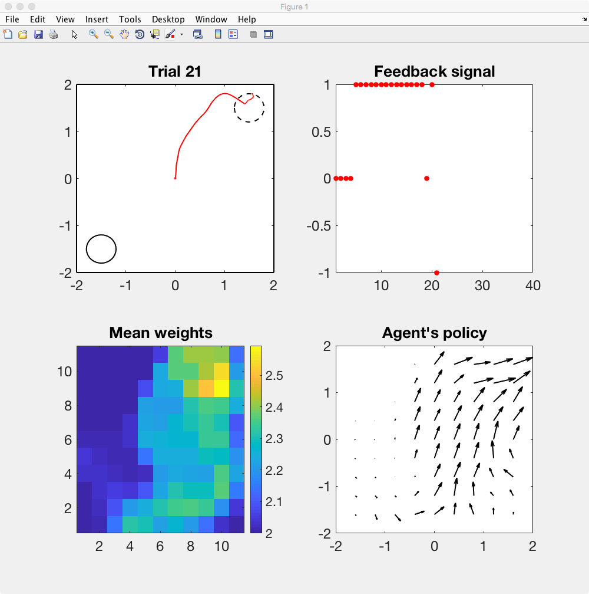

This is the readme for the models associated with the paper:
Zannone S, Brzosko Z, Paulsen O, Clopath C (2018) Acetylcholine-modulated plasticity in reward-driven navigation: a computational study. Sci Rep 8:9486
http://dx.doi.org/10.1038/s41598-018-27393-2
This matlab code was contributed by S Zannone.
Instructions to run the model:
The file seq_neuromod_plasticity.m is needed to run the plasticity
rules called +ACh and -ACh (the presence or absence of acetylcholine
can be decided with the flag ACh_flag). This is needed for Figures 2,
3 and 4. This is the bit of the code that partially overlaps with the
elife paper:
Brzosko Z, Zannone S, Schultz W, Clopath C, Paulsen O (2017) Sequential neuromodulation of Hebbian plasticity offers mechanism for effective reward-based navigation. Elife
http://dx.doi.org/10.7554/eLife.27756
Note: This model accession 245018 archive extends ModelDB
accession number 233396
by including the new files dynamic_reward_signal.m and
negative_feedback_signal.m. The seq_neuromod_plasticity.m scripts are
essentially the same between the two modeldb entries, with color and
content edits to the plotting commands.
The same file (seq_neuromod_plasticity.m), however, can be also used to run
simulations of the r-STDP rule by setting ACh_flag = 0 and changing
the STDP parameters (A_pre_post = pre-post window amplitude,
A_post_pre = post-pre window amplitude, tau_pre_post = pre-post window
time constant, tau_post_pre = post-pre window time constan). This is
needed to reproduce Figure 5.
The file dynamic_reward_signal.m was
used for Figure 6 and negative_feedback_signal.m is for Figure 7.
Here is a sample screenshot from running negative_feedback_signal which displays trials 1-40 results as they run:
